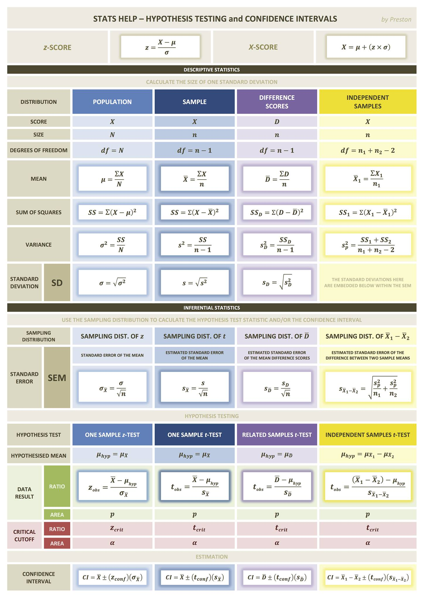

Chapter 5 Cheatsheets
This chapter contains a selection of useful cheatsheets. For updates check here: https://www.rstudio.com/resources/cheatsheets/
5.1 Statistics

Figure 5.1: Stats cheatsheet
5.2 R
Figure 5.2: Data wrangling in the tidyverse
5.3 Syntax
Figure 5.3: advancedr
Figure 5.4: base-r
Figure 5.5: data-import
Figure 5.6: data-transformation
Figure 5.7: data-visualization
Figure 5.8: how-big-is-your-graph
Figure 5.9: latexsheet
Figure 5.10: leaflet
Figure 5.11: lubridate
Figure 5.12: mosaic
Figure 5.13: purrr
Figure 5.14: regexcheatsheet
Figure 5.15: rmarkdown-reference
Figure 5.16: rmarkdown
Figure 5.17: rstudio-ide
Figure 5.18: shiny
Figure 5.19: strings
Figure 5.20: syntax